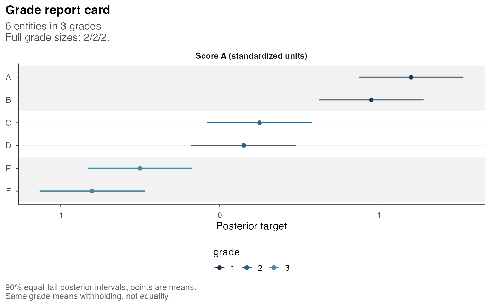
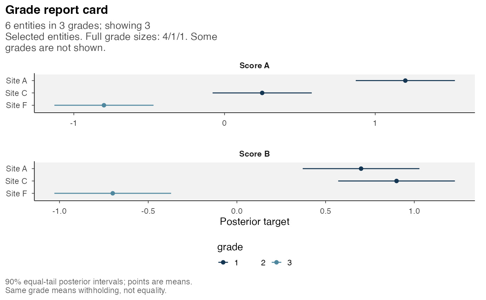

Plot Posterior Estimates and Grade Membership
postrank_plot_report_card.RdThe figure displays the stored posterior mean and central interval for each selected entity, with one panel per criterion and color indicating grade membership. Grade 1 has highest priority. The intervals describe uncertainty in the targets, whereas a shared grade denotes a withheld comparison without asserting target equality.
Usage
postrank_plot_report_card(
x,
criteria = NULL,
order = c("grade", "expected_rank", "mean", "label"),
max_rows = 30L,
show_withheld = TRUE,
...,
entities = NULL,
entity_labels = NULL,
criterion_labels = NULL,
ncol = NULL,
order_by = NULL
)Arguments
- x
A
postrank_report_cardor apostrank_analysiswith a prepared card.- criteria
Optional nonempty subset and display order of criterion IDs.
- order
Within-grade order:
"grade"preserves the stored card order;"expected_rank"uses weighted expected rank across all criteria;"mean"uses one criterion's mean;"label"sorts raw entity IDs.- max_rows
Positive integer display limit, default 30.
NULLshows every row. Explicitentitiesoverride this limit.- show_withheld
Logical; include full grade sizes in the subtitle.
- ...
Unused; nonempty arguments are rejected.
- entities
Optional distinct entity IDs to show. All selected entities are shown, even if their number exceeds
max_rows. Their display order followsorder, not the order of this vector.- entity_labels
Optional named character vector mapping IDs to display names. Partial maps retain the other IDs. Final display names must be distinct; include an ID when names repeat. Newlines can break long labels.
- criterion_labels
Optional named criterion-to-label vector. Partial maps use readable criterion names for the remainder. Final labels must be distinct. Labels may include units or newlines without changing values.
- ncol
Positive integer number of facet columns; default at most three. Use
ncol = 1with a taller figure for a narrow page.- order_by
Criterion used with
order = "mean". Required when several criteria are displayed; otherwise the sole displayed criterion is used. An explicit criterion may be any criterion of the card.
Value
A ggplot object whose data retain raw entity and criterion IDs.
If an analysis has no prepared card, a status panel explains the recorded
reason; a card and grades must already be available.
Details
The figure uses stored means, interval endpoints and grades without recomputing summaries or solving. Means are never clipped to intervals: a skewed distribution can have its mean outside its central interval. The caption gives the stored interval level and distinguishes supplied central summaries from computed equal-tail posterior intervals. These are not confidence intervals for the grades or solver bounds.
All ordering keeps grades contiguous. order = "expected_rank" uses the
card's weights across all criteria, even when only some panels are shown.
order = "mean" uses the larger mean first within each grade; means in
different units are never added for ordering. Labels affect display only.
Automatic row selection spreads up to max_rows rows across grades.
Where possible, each grade receives a row; remaining rows are allocated
by grade size and spaced within each grade. If fewer rows than grades are
requested, some grades are omitted. This is a display selection, not a
representative sample or a new analysis. Grade colors and subtitle counts
refer to the full report. For about 30 rows, consider a 7 by 8 inch output;
smaller selections and ncol = 1 suit narrow pages.
Examples
# Read prepared tutorial results; no model fitting or optimization.
source(system.file("scripts", "_vignette-setup.R", package = "postrank"),
local = TRUE)
one <- load_or_compute("tutorial_one")
p <- postrank_plot_report_card(one, max_rows = NULL,
criterion_labels = c(score_A = "Score A (standardized units)"))
p

Open full-size figure
# The same six sites on two criteria, with one panel per row.
two <- load_or_compute("tutorial_two")
postrank_plot_report_card(two, ncol = 1, entities = c("A", "C", "F"),
entity_labels = c(A = "Site A", C = "Site C", F = "Site F"),
criterion_labels = c(score_A = "Score A", score_B = "Score B"))

Open full-size figure